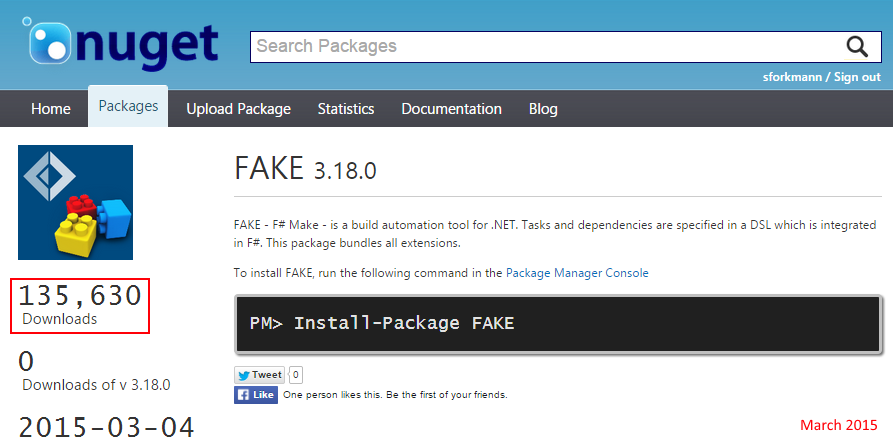

FAKE - F# Make

Steffen Forkmann @sforkmann
Cameron Taggart @cmr0n
Build tools for .NET
- MSBuild (XML)
- TFS XAML Builds (GUI & XML)
- NAnt (XML)
- Grunt or Gulp (JavaScript)
- PSake (Powershell)
- Albacore (Ruby Rake)
- UpperCut (XML? .NET & Ruby Gems)
- BauBuild (ScriptCS)
- Cake (C# Make)
Why should I use FAKE?

Why should I use FAKE?

Why should I use FAKE?

Why should I use FAKE?

Why should I use FAKE?

Who uses FAKE?
- Tachyus
- Volusion
- msu solutions GmbH
- Octokit (by GitHub)
- E.On Global Commodities UK
- Deedle (by BlueMountainCapital)
- CHECK24 Vergleichsportal GmbH
- Olo
Who uses FAKE?
- FSharp.Compiler.Service
- FSharp.Data
- FsCheck
- VFPT
- Paket
- Akka.net
- NSubstitute
- more ...
Getting Started
- Tutorial avaliable at fsharp.github.io/FAKE/
Running FAKE
1: 2: 3: 4: 5: |
|
or
1: 2: 3: 4: 5: |
|
Hello world
1: 2: 3: 4: 5: 6: 7: 8: 9: 10: 11: |
|
Hello world

Cleaning up
1: 2: 3: 4: 5: 6: 7: 8: 9: 10: |
|
Cleaning up

Compiling the application
1: 2: 3: 4: 5: 6: 7: 8: 9: 10: |
|
Compiling the application

Compiling test projects
1: 2: 3: 4: 5: 6: 7: 8: 9: 10: |
|
Running tests
1: 2: 3: 4: 5: 6: 7: 8: 9: 10: 11: 12: 13: 14: 15: |
|
Running tests

Running tests (in parallel)
1: 2: 3: 4: 5: 6: 7: 8: 9: 10: 11: 12: 13: 14: |
|
Running tests (xUnit)
1: 2: 3: 4: 5: 6: 7: 8: 9: 10: 11: |
|
Adding FxCop
1: 2: 3: 4: 5: 6: 7: 8: |
|
Create AssemblyInfo files
1: 2: 3: 4: 5: 6: 7: 8: 9: 10: |
|
Creating NuGet packages
1: 2: 3: 4: 5: 6: 7: 8: 9: 10: 11: 12: |
|
Creating NuGet packages
1: 2: 3: 4: 5: 6: 7: 8: 9: 10: 11: 12: 13: 14: 15: 16: 17: 18: 19: 20: 21: |
|
Creating NuGet packages (using Paket)
1: 2: 3: 4: 5: 6: 7: 8: 9: 10: 11: 12: |
|
ProjectScaffold
- allows a simple one step build and release process
- works with most build servers
- compiles the application and runs all test projects
- synchronizes AssemblyInfo files prior to compilation
- generates API docs based on XML documentation
- generates documentation based on Markdown files
- generates and pushes NuGet packages
Thank you
- Take a look at http://fsharp.github.io/FAKE/
- We take contributions!
- Slides are MIT licensed and made using FsReveal
- Follow @fsharpMake